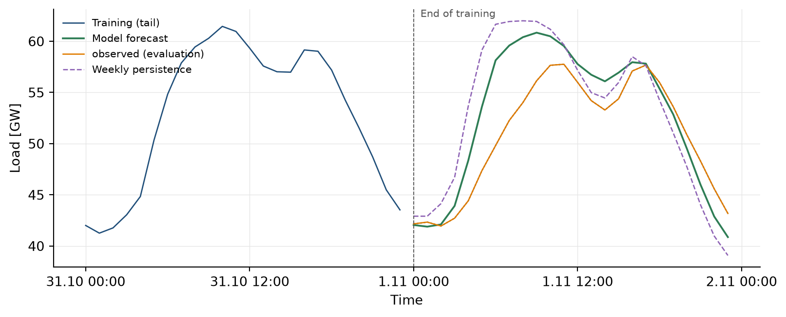

import pandas as pd
import pickle
from pathlib import Path
shared = Path("_cache/shared")
y_train = pd.read_parquet(shared / "y_train.parquet")["load"]
y_eval = pd.read_parquet(shared / "y_eval.parquet")["load"]
exog = pd.read_parquet(shared / "exog.parquet")
with Path("_cache/forecaster.pkl").open("rb") as fh:
model = pickle.load(fh)8 Produce a 24-hour forecast
NoteLearning objective
You understand the recursive prediction logic and can produce a daily forecast of the trained forecaster with two lines of code. You see how that forecast compares to the actual load and to a naive baseline.
8.1 Recursive multi-step forecasting
The model was trained to predict one hour at a time, given the last lags=168 hours. For a 24-hour daily forecast the forecaster shifts the 168-hour lag window forward hour by hour:
\[ \hat y_{t+1} = f(y_t, y_{t-1}, \dots, y_{t-167}, \mathbf{x}_{t+1}) \] \[ \hat y_{t+2} = f(\hat y_{t+1}, y_t, \dots, y_{t-166}, \mathbf{x}_{t+2}) \]
At every further step an already predicted value flows into the lag window. This recursion explains why forecast accuracy typically deteriorates with the horizon: model errors from earlier hours propagate to later ones.
8.2 AI Act link
Art. 13 of the AI Act (transparency and provision of information to deployers) demands that a user can understand how the forecast comes about. By writing the recursion equation out explicitly and making the lag window visible, we document the mechanism in a way that can be copied straight into a MODEL_CARD.md.
8.3 Code in action
We hand the forecaster the last lag window explicitly. For the model with lags=168 those are the last 168 hours of the training range. That way you see immediately which past information enters the first forecast hour.
y_eval_24h = y_eval.iloc[:24]
last_window = y_train.iloc[-168:].copy()
# A parquet round-trip loses the `freq` attribute of the DatetimeIndex.
# The forecaster needs it to construct the prediction index:
last_window.index = pd.DatetimeIndex(last_window.index, freq="h")
y_pred = model.forecaster.predict(
steps=24,
last_window=last_window,
exog=exog.loc[y_eval_24h.index],
)
y_pred.name = "forecast"
y_pred.index = y_eval_24h.index
print(f"Forecast produced: {len(y_pred)} hours, "
f"{y_pred.index[0]} ... {y_pred.index[-1]}")
print(f"Last lag hour: {last_window.index[-1]}")
print("First three forecast hours:")
print(y_pred.head(3).round(1).to_string())Forecast produced: 24 hours, 2024-11-01 00:00:00+00:00 ... 2024-11-01 23:00:00+00:00
Last lag hour: 2024-10-31 23:00:00+00:00
First three forecast hours:
Time (UTC)
2024-11-01 00:00:00+00:00 42052.3
2024-11-01 01:00:00+00:00 41891.0
2024-11-01 02:00:00+00:00 42106.28.4 Visualisation: forecast, reality, baseline
A forecast deserves the name only when it is better than a trivial baseline. We take weekly persistence as a baseline: the load of the same hour seven days earlier. If our model does not clearly beat this baseline, the whole effort was in vain.
import matplotlib.pyplot as plt
import matplotlib.dates as mdates
train_tail = y_train.iloc[-24:]
y_clean = pd.read_parquet(shared / "load_de_2024_clean.parquet")["load"]
persistence = y_clean.shift(168).loc[y_eval_24h.index]
fig, ax = plt.subplots(figsize=(8.5, 3.5))
ax.plot(train_tail.index, train_tail.values / 1000,
color="#1F4E79", linewidth=1.0, label="Training (tail)")
ax.plot(y_eval_24h.index, y_eval_24h.values / 1000,
color="#1F4E79", linewidth=1.0, linestyle=":")
ax.plot(y_pred.index, y_pred.values / 1000,
color="#2E7D55", linewidth=1.4, label="Model forecast")
ax.plot(y_eval_24h.index, y_eval_24h.values / 1000,
color="#E07B00", linewidth=1.0, label="observed (evaluation)")
ax.plot(persistence.index, persistence.values / 1000,
color="#8E63B5", linewidth=1.0, linestyle="--", label="Weekly persistence")
split = train_tail.index[-1] + pd.Timedelta(hours=1)
ax.axvline(split, color="#555555", linestyle="--", linewidth=0.7)
ax.text(split, ax.get_ylim()[1], " End of training",
ha="left", va="top", fontsize=8, color="#555555")
ax.set_ylabel("Load [GW]")
ax.set_xlabel("Time")
ax.grid(True, color="#E5E5E5", linewidth=0.5)
ax.xaxis.set_major_locator(mdates.HourLocator(byhour=[0, 12]))
ax.xaxis.set_major_formatter(mdates.DateFormatter("%-d.%-m %H:%M"))
ax.legend(loc="upper left", frameon=False, fontsize=8)
for s in ("top", "right"):
ax.spines[s].set_visible(False)
fig.tight_layout()
plt.show()
8.5 Persisting for follow-up chapters
y_pred.to_frame("forecast").to_parquet(shared / "y_pred_24h.parquet")
TipExercises (with Claude)
- Understand recursion error. Have Claude rebuild the recursion equation by hand in a small loop (with a trivial model such as
f(y, x) = mean(y[-24:])) and demonstrate on a 96-hour horizon how model errors amplify over time. - Change the lag window. Discuss with Claude what happens when you predict
steps=72(3 days) instead ofsteps=24. Which hours among the last 24 predictions are probably the least accurate and why? - Transparency for the deployer. Ask Claude to write an example entry for a
MODEL_CARD.mdthat explains recursive forecasting to a non-technical reader in three sentences and spells out what consequence this has for the forecast uncertainty at the end of the horizon.